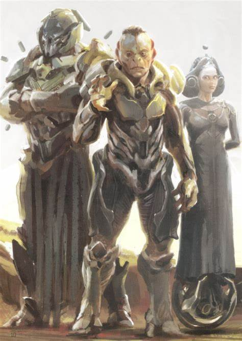
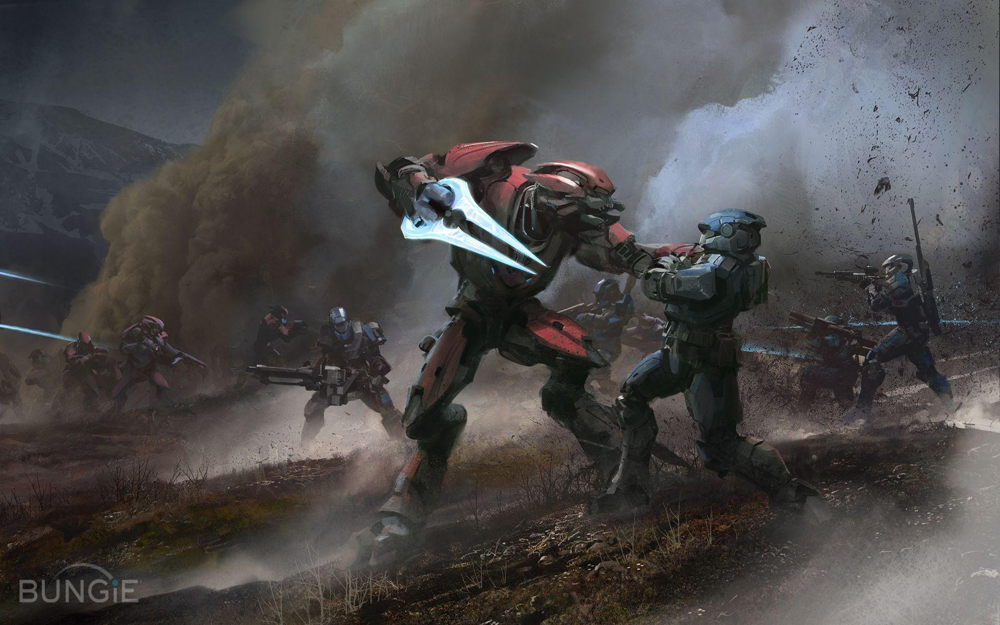
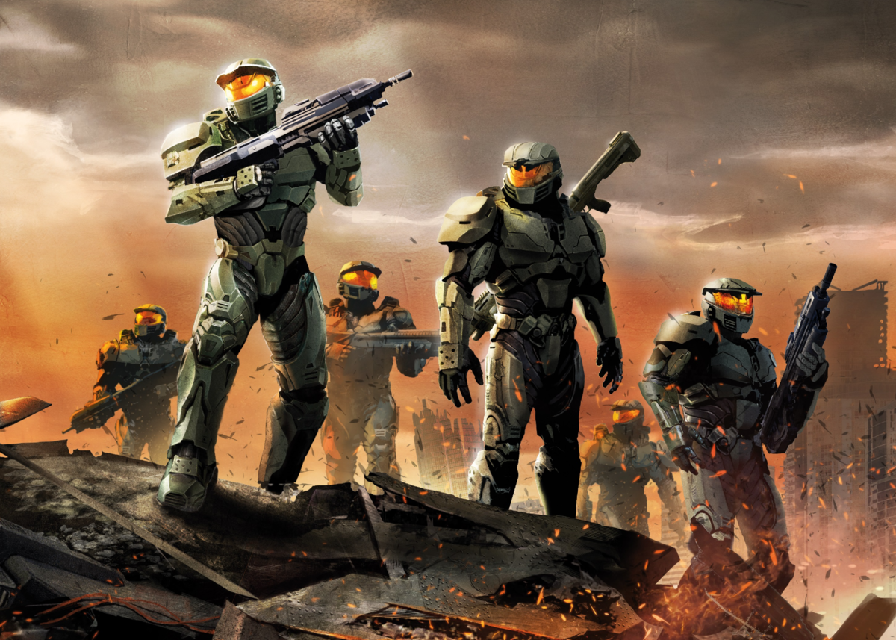
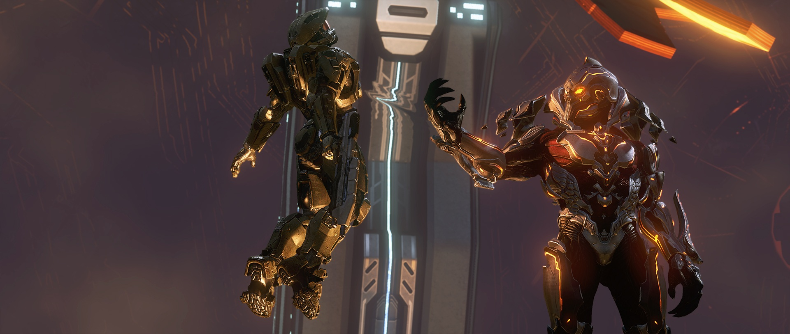
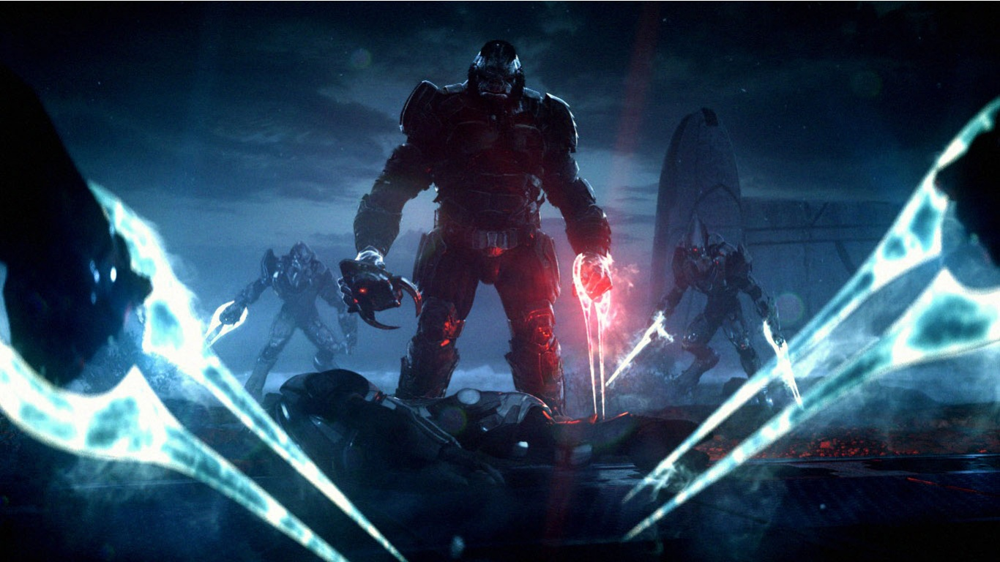
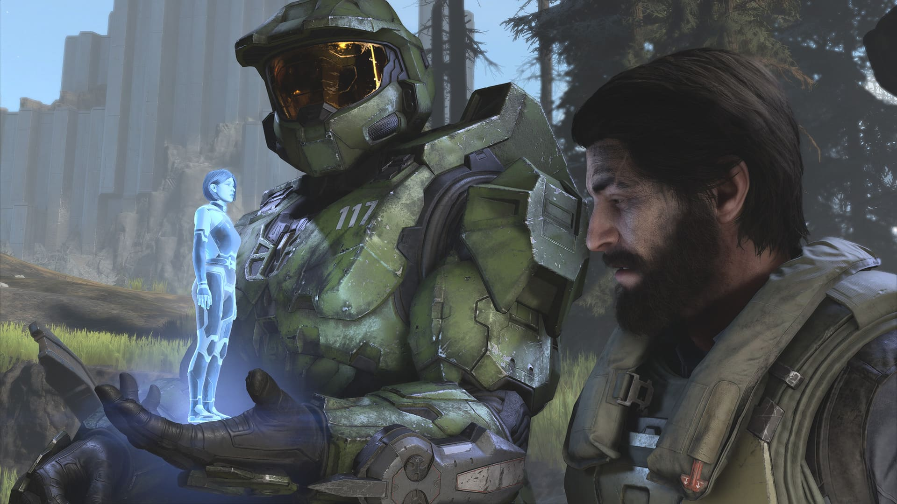
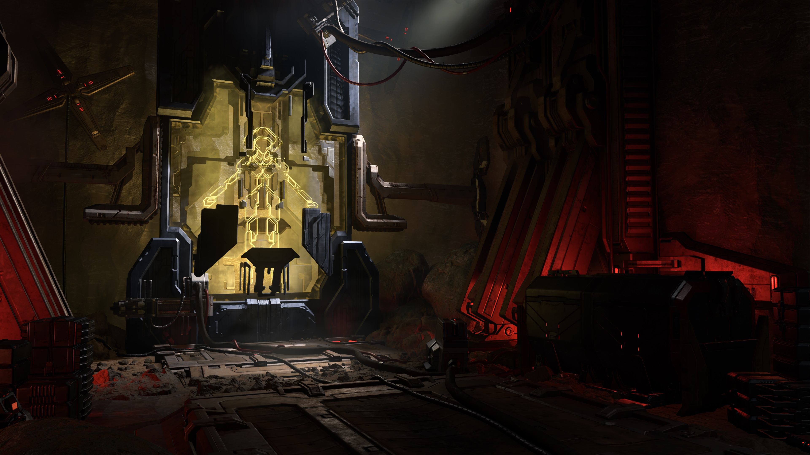

Historia del Universo Halo
Los Forerunners y el Origen de los Halos
Hace miles de años, los Forerunners gobernaban la galaxia. Crearon los Anillos Halo como última defensa contra el parásito conocido como el Flood. Tras usar los anillos para eliminar a toda vida sensible, desaparecieron, dejando atrás sus estructuras y tecnología.
El Covenant y la Guerra contra la Humanidad
En el siglo XXVI, la humanidad se expandió por la galaxia bajo el mando del UNSC. En 2525, se encontró con el Covenant, una alianza de especies alienígenas fanáticas que consideraban a los humanos una ofensa a sus dioses: los Forerunners. Así comenzó una guerra devastadora.
El Proyecto SPARTAN-II y el Jefe Maestro
Para enfrentar al Covenant, la humanidad creó super soldados conocidos como Spartans. John-117, el Jefe Maestro, se convirtió en el más legendario de todos. Su compañera IA, Cortana, sería clave en los eventos que seguirían.
Descubrimiento y Destrucción de los Anillos Halo (Halo CE - Halo 3)
Durante la guerra, el Jefe Maestro descubrió las instalaciones Halo, diseñadas para contener al Flood. Tras impedir su activación y enfrentar la amenaza del Arca, logró salvar la galaxia, quedando atrapado en el espacio profundo.

El Amanecer de los Prometeos (Halo 4)
En Halo 4, el Jefe despierta en el planeta Réquiem y se enfrenta al Didacta, un líder Forerunner que buscaba esclavizar a la humanidad. Cortana, sufriendo deterioro por su edad como IA, se sacrifica para salvarlo.
Cortana y Los Creados (Halo 5: Guardians)
Cortana sobrevive y adopta una nueva visión: la galaxia necesita orden bajo su control. Recluta IAs en una alianza llamada Los Creados. Con el control de los Guardianes, Cortana amenaza con someter o destruir toda resistencia.

Los Desterrados y el Arca (Halo Wars 2)
Mientras Cortana crece en poder, otra amenaza surge: Los Desterrados, liderados por Atriox, un ex-Brute del Covenant. En Halo Wars 2, esta brutal facción toma el control del Arca y derrota a fuerzas humanas con inteligencia y ferocidad.
La Caída de la UNSC y el Regreso del Jefe Maestro (Halo Infinite)
En Halo Infinite, la humanidad sufre una devastadora derrota en Zeta Halo a manos de los Desterrados. El Jefe Maestro es encontrado en el espacio por el piloto Echo-216 y vuelve a la batalla, buscando derrotar a Atriox y restaurar la esperanza.
Los Eternos: La Verdadera Amenaza
Mientras lucha contra los Desterrados, el Jefe descubre una amenaza más antigua: Los Eternos (The Endless). Esta misteriosa especie fue considerada tan peligrosa por los Forerunners que fue encerrada en Zeta Halo. Su liberación podría cambiar el destino de la galaxia.
Los Flood: El Parásito Galáctico

Los Flood son una antigua y devastadora amenaza parasitaria capaz de consumir y controlar a cualquier organismo inteligente. Su objetivo es propagar su infección, asimilando conocimiento y tecnología para expandirse por toda la galaxia.
Fueron la razón por la cual los Forerunners activaron los anillos Halo: al eliminar toda forma de vida inteligente, cortaban el sustento del Flood. Aunque parecían erradicados, los eventos de la trilogía original de Halo revelaron su resurgimiento en distintas instalaciones Forerunner.
El Gravemind, una inteligencia central del Flood, jugó un papel importante manipulando tanto a humanos como a Covenant en su intento por lograr la dominación galáctica. Aunque fueron detenidos temporalmente, la amenaza del Flood nunca está completamente eliminada.